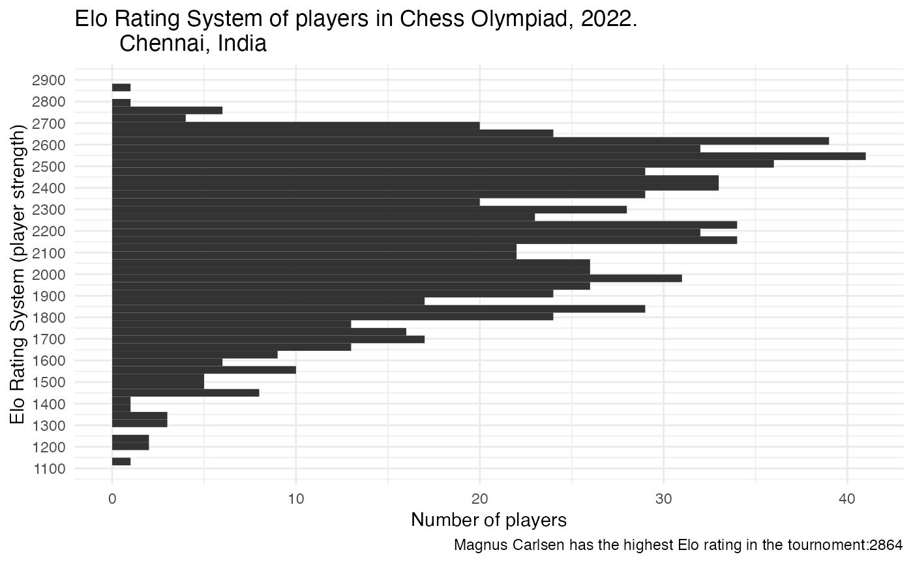
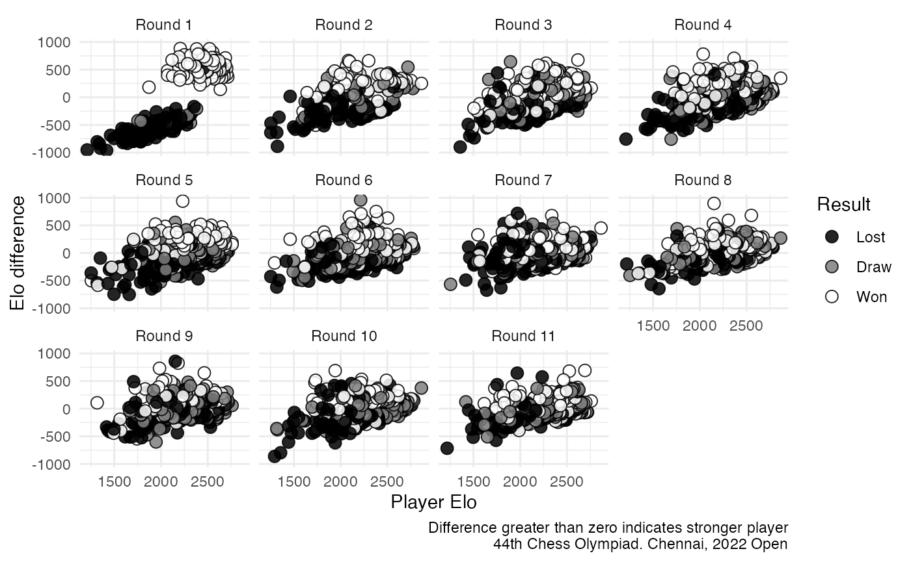
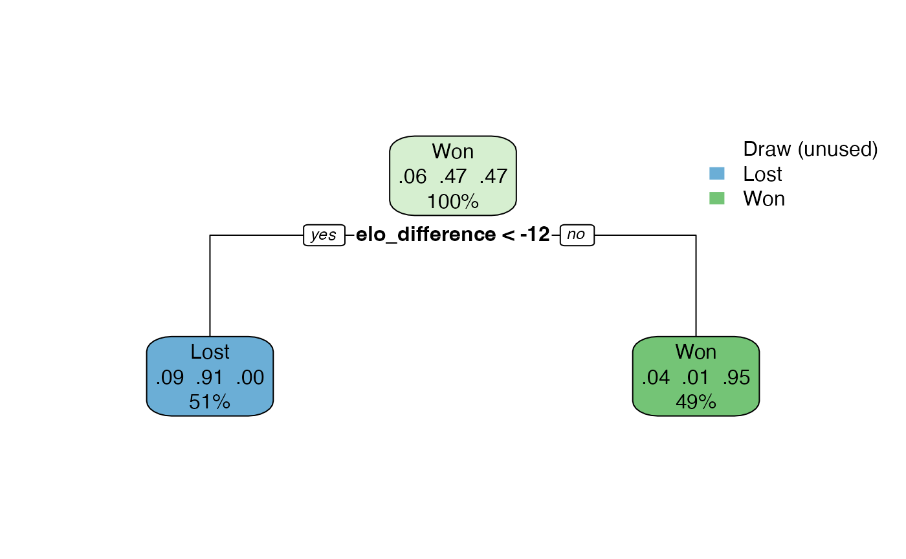
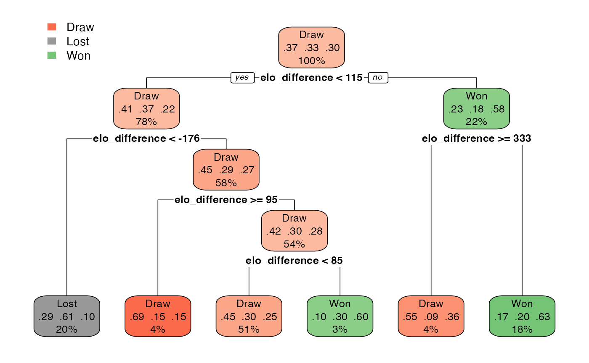

Does ELO predict the wining move?
The ELO rating system is a method for calculating the relative skill levels of chess players. The rating is based on the results of games played, and is used to compare the strength of one player to another. The higher a player’s ELO rating, the more skilled they are considered to be.
In this document, the ELO difference between two players is used to evaluate the probability of one player winning the match.
Libraries
library(rpart.plot)
#> Warning: package 'rpart.plot' was built under R version 4.1.2
library(tidymodels)
#> Warning: package 'broom' was built under R version 4.1.2
#> Warning: package 'scales' was built under R version 4.1.2
#> Warning: package 'dplyr' was built under R version 4.1.2
#> Warning: package 'ggplot2' was built under R version 4.1.2
#> Warning: package 'tibble' was built under R version 4.1.2
#> Warning: package 'tidyr' was built under R version 4.1.2Load the players data
data("players")Distribution of ELO
First, let’s visualize the ELO distribution of the players.
It is important to filter out players with an ELO rating of zero from the analysis, as these players have not yet been rated and do not have a known skill level.
players %>%
filter(rtg!=0) %>%
ggplot(aes(rtg)) +
geom_histogram(bins = 50, fill="gray20") +
scale_x_continuous(breaks = seq(1000,2900,100))+
theme_minimal() +
coord_flip() +
theme(axis.text = element_text("")) +
labs(x="Elo Rating System (player strength)",
y="Number of players",
title = "Elo Rating System of players in Chess Olympiad, 2022.
Chennai, India ",
caption = "Magnus Carlsen has the highest Elo rating in the tournoment:2864")
It may be interesting to plot the ELO ratings of players by federation, as the Chess Olympiad is played by national teams. By examining the ELO ratings of players within each federation, we can get a sense of the overall strength of the teams participating in the event. This analysis could potentially provide insight into the results of the Chess Olympiad and help predict the outcomes of matches.
players %>%
filter(rtg>2600) %>%
ggplot(aes(reorder(fed, rtg),rtg)) +
theme_minimal() +
geom_boxplot() +
coord_flip() +
labs(x="", y="ELO")
The United States have the strongest team in the tournament.
Load results data
data("results")Differences in ELO by round
The Chess Olympiad was a Swiss-style tournament, which means that players are paired against opponents with similar scores in each round. In the first round, the highest-ranked player is matched against the player in the middle of the ELO rating distribution. The second highest-ranked player is then matched against the player just below the player in the middle of the ELO rating distribution, and so on. This implies that ELO differences are maximized in the first round. Then, the pairings for each subsequent round are determined based on the results of the previous rounds, with the goal of ensuring that players face opponents with similar scores.
A visual representation of the differences in ELO by round are presented in the following graph.
results %>%
filter(elo_difference>=-1000,
elo_difference<=1000,
!is.na(elo_white), !is.na(elo_black), elo_white!=0,elo_black!=0) %>%
ggplot(aes(as.numeric(elo_white),elo_difference,
fill=factor(result_white),
color=factor(result_white))) +
geom_point(shape = 21, alpha=0.85,
size = 3, stroke = 0.5) +
theme_minimal() +
scale_fill_manual(values=c("Lost"="black", "Draw"="gray50","Won"="white")) +
scale_color_manual(values=c("Lost"="black", "Draw"="black","Won"="black")) +
labs(fill="Result", color="Result",
x="Player Elo",
y="Elo difference",
caption = "Difference greater than zero indicates stronger player
44th Chess Olympiad. Chennai, 2022 Open") +
facet_wrap(~ round)
Model the winning chances for players with the white pieces based on ELO difference.
Now, we can identify the best split of the differences in ELO ratings
to classify the results of chess games. I will use
tidymodels to estimate a CART model.
Create a recepie
I will add two steps in the recipe. One to filter the data set by round, and the other to convert results in a factor variable. I also will limit my analysis to players with more than 1600 in ELO.
results <- results %>%
filter(as.numeric(elo_white)>1600) %>%
filter(as.numeric(elo_black)>1600)
recipe <- recipe(
result_white ~ elo_difference + round_number, data = results) %>%
step_filter(round_number==round)
Estimate the model
I will estimate the model for the round 1.
round <- 1
cart_fit <- wrkfl %>%
fit(data=results) %>%
extract_fit_parsnip()Draw an tree to understand the results
Finally, I will create a tree showing the splits
cart_fit <- repair_call(cart_fit, data = round)
cart_tree_fit <- cart_fit$fit
rpart.plot::rpart.plot(cart_tree_fit, roundint = FALSE)
rpart.rules(cart_tree_fit, cover = TRUE)
#> Warning: Cannot retrieve the data used to build the model (so cannot determine roundint and is.binary for the variables).
#> To silence this warning:
#> Call rpart.rules with roundint=FALSE,
#> or rebuild the rpart model with model=TRUE.
#> ..y Dra Los Won cover
#> Lost [.09 .91 .00] when elo_difference < -12 51%
#> Won [.04 .01 .95] when elo_difference >= -12 49%According to the model, a difference of 12 in the ELO is sufficient to accurately predict the winner in 95% of cases and the loser in 91% of cases.
Model the last round
Let’s test the model for the final round, where the matches happened between the strongest opponents.
I will add a the tree_depth parameter to my model. The
depth of the tree refers to the number of levels the tree has.
cart_spec <-
decision_tree(tree_depth = 4) %>%
set_engine("rpart") %>%
set_mode("classification")
wrkfl <- workflow() %>%
add_model(cart_spec) %>%
add_recipe(recipe)
round <- 11
cart_fit <- wrkfl %>%
fit(data=results)
cart_fit <- wrkfl %>%
fit(data=results) %>%
extract_fit_parsnip()
cart_fit <- repair_call(cart_fit, data = round)
cart_tree_fit <- cart_fit$fit
rpart.plot::rpart.plot(cart_tree_fit, roundint = FALSE)
rpart.rules(cart_tree_fit, cover = TRUE)
#> Warning: Cannot retrieve the data used to build the model (so cannot determine roundint and is.binary for the variables).
#> To silence this warning:
#> Call rpart.rules with roundint=FALSE,
#> or rebuild the rpart model with model=TRUE.
#> ..y Dra Los Won cover
#> Draw [.45 .30 .25] when elo_difference is -176 to 85 51%
#> Draw [.55 .09 .36] when elo_difference >= 333 4%
#> Draw [.69 .15 .15] when elo_difference is 95 to 115 4%
#> Lost [.29 .61 .10] when elo_difference < -176 20%
#> Won [.10 .30 .60] when elo_difference is 85 to 95 3%
#> Won [.17 .20 .63] when elo_difference is 115 to 333 18%The colors of the leaves in the decision tree suggest that ELO differences continue to be an important factor in the final round of the chess tournament. The model appears to be more accurate at predicting the outcomes of games with large ELO differences. For example, if you have more than 333 points in ELO, the model predicts 63% wining chances for you. However, if the ELO difference is less than 333 (but more than 115), the model predicts 55% of draw.
When the ELO difference is less than 115, the model’s predictions become more interesting. If a player has 176 points less than their opponent, the model is more likely to classify them as a loser (61%). However, if the ELO difference is less than 85 points, the player still has a good chance of winning the game. This could be seen as an indicator of the performance of some players with lower ELO ratings who are having a strong tournament. On the other hand, if the ELO difference is greater than 85 points, most of the chances are for a draw.
This was a quick example of how to use ChessOlympiad package.